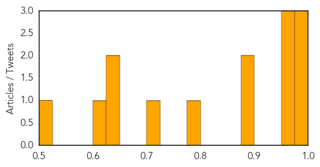
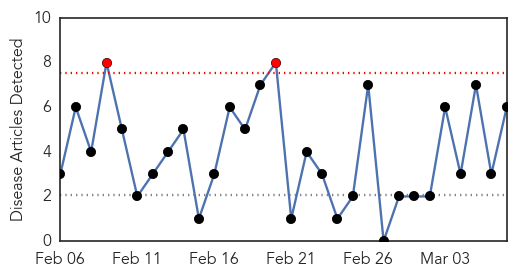
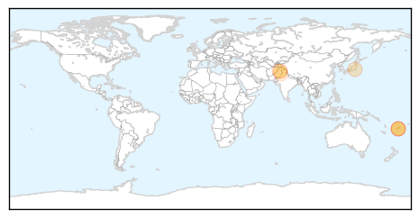

Measles
30-Day Web Trend
3 alerts, 3 warnings

30-Day Twitter Trend
0 alerts, 0 warnings

Article Locations

Article Confidences
Top Articles:
- 0.983
- 16 measles cases confirmed in New York City outbreak
- 0.982
- Measles Outbreak in Manhattan, the Bronx; 16 Cases Reported
- 0.977
- Measles Outbreak Hits Northern Manhattan and Bronx
- 0.972
- Measles outbreak in New York City, health officials warn
- 0.964
- Measles in NYC: Health Dept. urges vaccination if never gotten MMR
- 0.954
- Measles Outbreak Confirmed In New York City
- 0.897
- Measles Outbreak in New York City Has Health Officials Looking For Answers
- 0.884
- Potential measles exposure in San Diego
- 0.778
- 16 Confirmed Cases Alert Health Officials
- 0.701
- St. Stephen students without measles immunization asked to stay home
- 0.643
- Two more measles cases pop up in SD
- 0.643
- Penetrating the remotest areas of Haiti to eliminate maternal and newborn tetanus
- 0.610
- Sudan Vision Daily
- 0.509
- Measles outbreak in Bronx and Manhattan
Top Tweets:
-
No tweets found for Mar 07, 2014
Dengue Fever
30-Day Web Trend
2 alerts, 0 warnings

30-Day Twitter Trend
1 alerts, 0 warnings

Article Locations
Article Confidences

Top Articles:
- 0.990
- Fiji records 9,825 dengue cases, launches national campaign to contain outbreak
- 0.990
- Confirmed dengue cases now in tourism area.
- 0.721
- Global warming amplifying malaria risk
- 0.696
- Delay in provision of resources,late response major causes behind outbreaks
- 0.520
- Booster Doze Of Measles Vaccine For 40 Million Children In Punjab
- 0.507
- Public health: Rs610 million released for measles campaign in Punjab
Top Tweets:
-
No tweets found for Mar 07, 2014